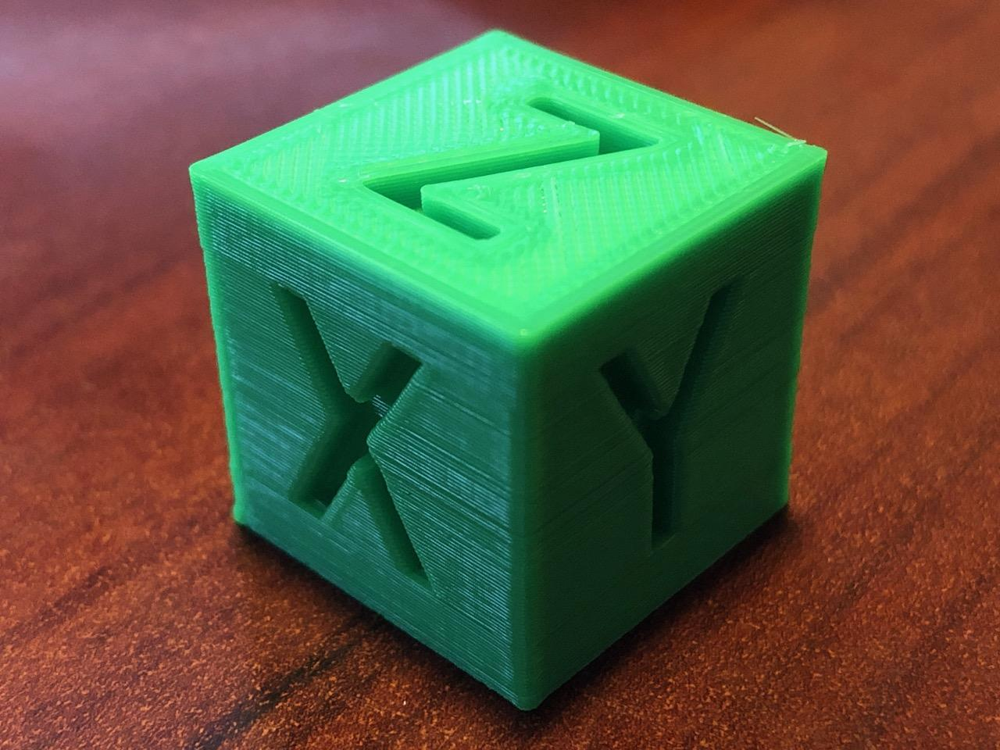

Grupas projektam bija jāizveido 3D kuba dizains, izmantojot bezmaksas tiešsaistes modelēšanas programmu TinkerCad. Uzzināt, kas notiek 3D objekta projektēšanā, bija interesanta pieredze, kas, visticamāk, kļūs arvien vajadzīgāka nākotnē.
Zemāk redzamā saite Tevi nogādās uz mūsu grupas kopīgi paveiktā darba satura lapu!
Saturs